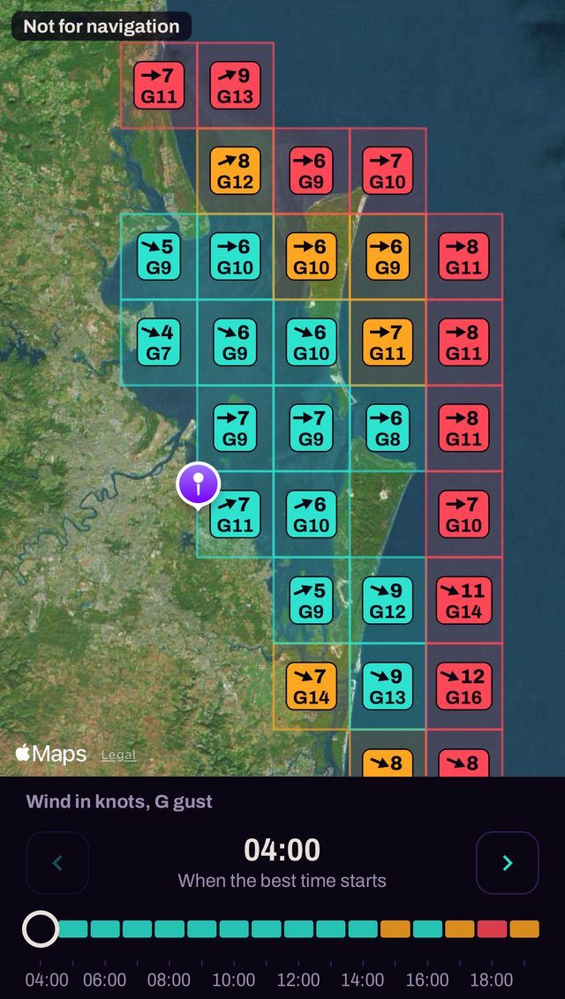
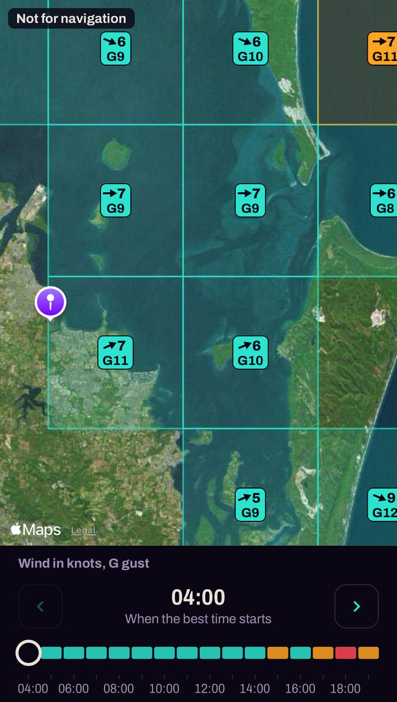

All of it in one place
Most boaties have a phone full of apps for fish, tides, bite times, wind and weather, and it is up to them to work out how they fit together for their boat. FaiSH puts all of that in one place. Seeing it all more easily lets the skipper make safer decisions, for a more enjoyable boating experience. That is FaiSH's mission.
FaiSH for iPhone is in beta testing, so do not rely solely on it.
The map


Screens from FaiSH for iPhone, on an earlier forecast for Moreton Bay. They are examples, not a forecast.
What it does
- Your boat, your kind of tripSet the wind and sea your boat can take, and each hour is graded against them. The limits tighten for the trip: fishing, a family day, an island camp, a dive, skiing.
- Tomorrow and the days aheadA grade for the day, the best time to go, and the time to be off the water when there is one. Window sets out the days ahead, and Hour by hour opens any of them in full.
- The journey as well as the rampChoose a place or drop a pin, and the forecast follows the route, with where the roughest water sits along it.
- The mapWind and gusts square by square, on a satellite picture or a map, for any hour.
- Bureau marine wind warningsIn the Bureau's own words. A warning closes the hours it covers.
- TidesHigh and low water from a Bureau tide station within 15 km of the ramp, with the ramp register's own tide warnings beside them.
- Fish and bite windowsBite windows from the sun and moon. What is worth chasing on your water, with the closed seasons and the places the rules change. The fish lists are in beta too, and no local has read them yet.
- Australian boat rampsMore than 2,000 of them, found by name, town or state.
- Your own marksDrop a pin, move it and name it. Marks stay on your phone, and FaiSH never receives where they are.
- A written reading of the dayWritten by AI from the day's figures, and marked as AI. The grade itself comes from fixed rules, the same way every time.
- The WatchAn optional timer for getting home. Set your time back at the ramp. If you have not ended it by then, FaiSH texts you, then the people you named. It does not contact marine rescue, so keep logging on with them.
- With no signalThe last forecast and a fortnight of tides stay on the phone.
Where the data comes from
- Wind, gusts and weatherOpen-Meteo, based on Germany's weather service (DWD), at points about 13 km apart. The UK Met Office's model is the second opinion.
- Waves and swellOpen-Meteo's wave models.
- Marine wind warnings and tide predictionsThe Bureau of Meteorology. The Bureau is the official forecaster, and the forecast FaiSH reads is not the Bureau's.
- Sun and moonWorked out on your phone.
- Boat rampsState and territory government lists, credited in the app.
- Place namesThe Composite Gazetteer of Australia.
- Fish, seasons and closuresFisheries agencies, state law and research surveys, then fishing columns where there is nothing better. Each list says what it rests on.
- The map and satellite pictureApple Maps.
- The written readingA model from Anthropic, given the day's figures and no account of who you are.
What it is not
FaiSH is a planning aid. It is not the official forecast, it does not contact rescue services, and it is not a chart. The decision to go, and when to come home, stays with the skipper. The terms say what the grade leaves out.
In an emergency, call 000 or use VHF channel 16.